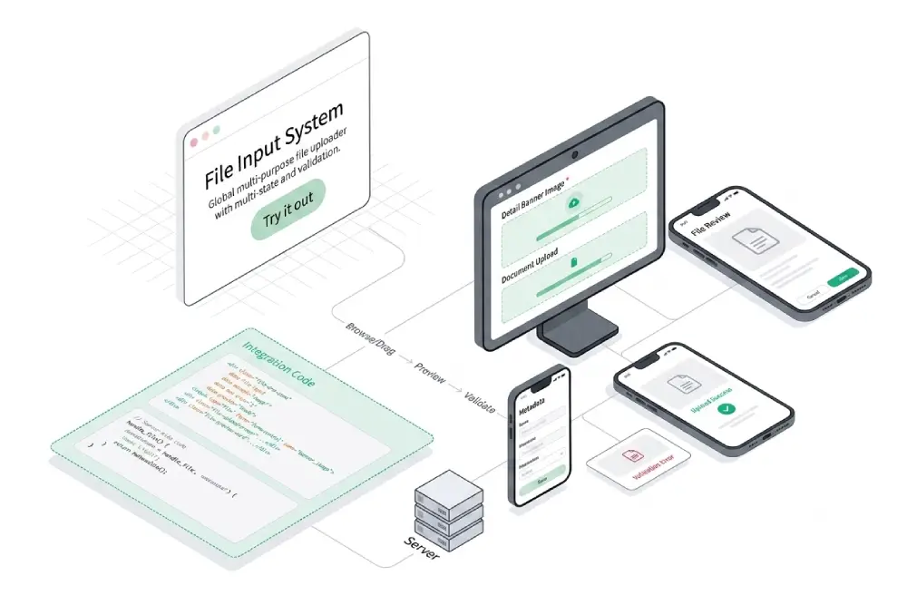
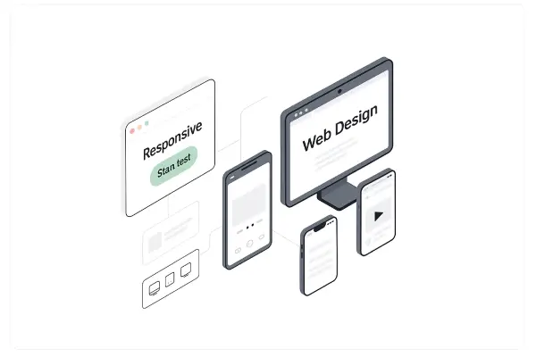
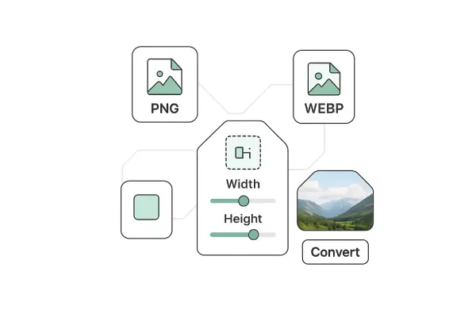
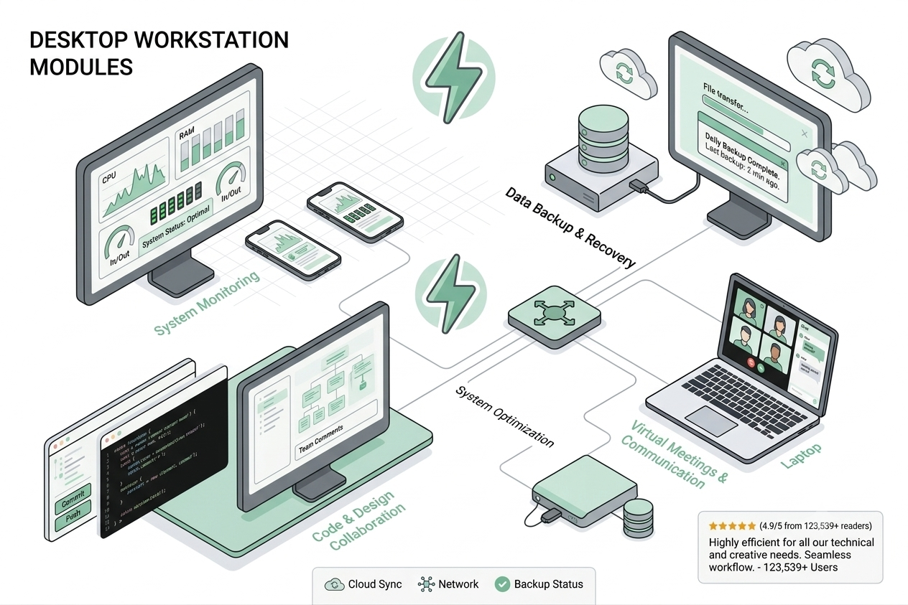

File Input Component
A globally reusable file input with drag-and-drop, preview, metadata, and validation. Works for any file type.

Responsive Checker
Quickly test if any website is mobile, tablet, or desktop-friendly in real time.

Image Converter & Resizer
Resize and convert your images to modern formats like WebP to reduce file size without losing quality. All processing happens locally in your browser.

Windows 11
A browser-based desktop operating system inspired by Windows 95, built with PHP, HTML, Tailwind CSS & JS. Users can interact with desktop icons, open multiple windows, manage files, customize themes, and run built-in applications.